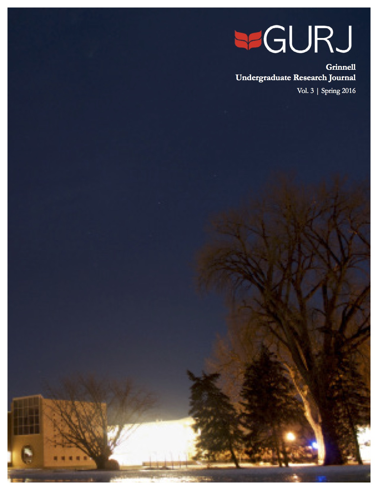

Skip to main content
Skip to main navigation menu
Skip to site footer
Current
Archives
About
About the Journal
Submissions
Contact
Search
Search
Register
Login
Home
/
Archives
Grinnell Undergraduate Research Journal 2016-2017
Vol 4 No 1 (2017)

Grinnell College Undergraduate Research Journal 2015-2016
Vol 3 No 1 (2016)
1 - 2 of 2 items